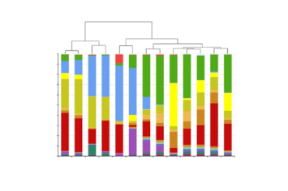

The human small intestinal microbiota is driven by rapid uptake and conversion of simple carbohydrates
The ISME Journal 6(7):1415–1426 (2012) · doi:10.1038/ismej.2011.212
Abstract. The human gastrointestinal tract (GI tract) harbors a complex community of microbes. The microbiota composition varies between different locations in the GI tract, but most studies focus on the fecal microbiota, and that inhabiting the colonic mucosa. Consequently, little is known about the microbiota at other parts of the GI tract, which is especially true for the small intestine because of its limited accessibility. Here we deduce an ecological model of the microbiota composition and function in the small intestine, using complementing culture-independent approaches. Phylogenetic microarray analyses demonstrated that microbiota compositions that are typically found in effluent samples from ileostomists (subjects without a colon) can also be encountered in the small intestine of healthy individuals. Phylogenetic mapping of small intestinal metagenome of three different ileostomy effluent samples from a single individual indicated that Streptococcus sp., Escherichia coli, Clostridium sp. and high G+C organisms are most abundant in the small intestine. The compositions of these populations fluctuated in time and correlated to the short-chain fatty acids profiles that were determined in parallel. Comparative functional analysis with fecal metagenomes identified functions that are overrepresented in the small intestine, including simple carbohydrate transport phosphotransferase systems (PTS), central metabolism and biotin production. Moreover, metatranscriptome analysis supported high level in-situ expression of PTS and carbohydrate metabolic genes, especially those belonging to Streptococcus sp. Overall, our findings suggest that rapid uptake and fermentation of available carbohydrates contribute to maintaining the microbiota in the human small intestine.

Supplementary data
Metagenome (1A, 1M, A) and metatranscriptome (cDNA) assemblies of ileostomy effluent samples. Sample names map to SMASH identifiers as listed. The bundled archive contains all files below.
| File | Description | Size | |
|---|---|---|---|
| README.txt | Description of the samples and file types. | 494 B | Download |
| Contigs | |||
| 1A.contig2read.gff | Reads mapped on the contigs – sample 1A (MC6.MG1) | 13.2 MB | Download |
| 1M.contig2read.gff | Reads mapped on the contigs – sample 1M (MC6.MG2) | 12.9 MB | Download |
| A.contig2read.gff | Reads mapped on the contigs – sample A (MC6.MG3) | 25.3 MB | Download |
| cDNA.contig2read.gff | Reads mapped on the contigs – sample cDNA (MC5.MG4) | 281 KB | Download |
| 1A.contigs.fa | Contigs and singletons – sample 1A (MC6.MG1) | 21.7 MB | Download |
| 1M.contigs.fa | Contigs and singletons – sample 1M (MC6.MG2) | 21.7 MB | Download |
| A.contigs.fa | Contigs and singletons – sample A (MC6.MG3) | 20.4 MB | Download |
| cDNA.contigs.fa | Contigs and singletons – sample cDNA (MC5.MG4) | 1.9 MB | Download |
| Genes | |||
| 1A.contig2gene.gff | Genes predicted on the contigs – sample 1A (MC6.MG1) | 7.4 MB | Download |
| 1M.contig2gene.gff | Genes predicted on the contigs – sample 1M (MC6.MG2) | 7.0 MB | Download |
| A.contig2gene.gff | Genes predicted on the contigs – sample A (MC6.MG3) | 6.0 MB | Download |
| cDNA.contig2gene.gff | Genes predicted on the contigs – sample cDNA (MC5.MG4) | 390 KB | Download |
| 1A.gene.fa | Nucleotide sequences of protein-coding genes – sample 1A (MC6.MG1) | 18.2 MB | Download |
| 1M.gene.fa | Nucleotide sequences of protein-coding genes – sample 1M (MC6.MG2) | 17.8 MB | Download |
| A.gene.fa | Nucleotide sequences of protein-coding genes – sample A (MC6.MG3) | 16.5 MB | Download |
| cDNA.gene.fa | Nucleotide sequences of protein-coding genes – sample cDNA (MC5.MG4) | 1.5 MB | Download |
| 1A.protein.fa | Protein sequences – sample 1A (MC6.MG1) | 8.1 MB | Download |
| 1M.protein.fa | Protein sequences – sample 1M (MC6.MG2) | 7.9 MB | Download |
| A.protein.fa | Protein sequences – sample A (MC6.MG3) | 7.2 MB | Download |
| cDNA.protein.fa | Protein sequences – sample cDNA (MC5.MG4) | 614 KB | Download |
| Processed reads | |||
| 1A.reads.fa | Processed reads – sample 1A (MC6.MG1) | 47.7 MB | Download |
| 1M.reads.fa | Processed reads – sample 1M (MC6.MG2) | 50.9 MB | Download |
| A.reads.fa | Processed reads – sample A (MC6.MG3) | 89.5 MB | Download |
| cDNA.reads.fa | Processed reads – sample cDNA (MC5.MG4) | 1.9 MB | Download |
How to cite
If you use these data, please cite the original publication:
Zoetendal EG, Raes J, van den Bogert B, Arumugam M, Booijink CCGM, Troost FJ, Bork P, Wels M, de Vos WM, Kleerebezem M. The human small intestinal microbiota is driven by rapid uptake and conversion of simple carbohydrates. The ISME Journal 6(7):1415–1426 (2012). https://doi.org/10.1038/ismej.2011.212
@article{zoetendal2012human,
title = {{The human small intestinal microbiota is driven by rapid uptake and conversion of simple carbohydrates}},
author = {Zoetendal, E. G. and Raes, J. and van den Bogert, B. and Arumugam, M. and Booijink, C. C. G. M. and Troost, F. J. and Bork, P. and Wels, M. and de Vos, W. M. and Kleerebezem, M.},
journal = {The ISME Journal},
year = {2012},
volume = {6},
number = {7},
pages = {1415--1426},
doi = {10.1038/ismej.2011.212}
}